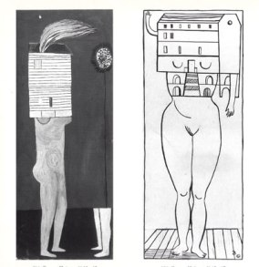
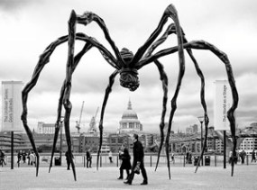

پذيرش > سایت نوشته ها > دختربچهی عاصی /نگاهی به زندگی و آثار لوییز بورژوا، هنرمند فمینیست


 دختربچهی عاصی /نگاهی به زندگی و آثار لوییز بورژوا، هنرمند فمینیست دختربچهی عاصی /نگاهی به زندگی و آثار لوییز بورژوا، هنرمند فمینیست
6 تیر 1389 - - نسخه قابل چاپ
در روز سیویکم ماه می امسال، لوییز بورژوا مجسمهساز و نقاش مشهور فرانسویالاصل امریکایی در سن ۹۸ سالگی در نیویورک درگذشت. او که تا آخرین روزهای زندگیاش هم چنان کار میکرد، شهرت جهانی ولی دیررس خود را مدیون مجسمههایش بود. آثاری جنجالی که در دهههای اخیر در اکثر گالریهای معتبر دنیا به نمایش در آمدهاند.
لوییز بورژوا تا هفتاد سالگی در خارج از امریکا مشهور نبود، ولی برپایی نمایشگاهی از آثارش در موزه هنرهای مدرن نیویورک در سال ۱۹۸۲ او را هنرمندی پر آوازه کرد. عکسی که رابرت ماپل تروپ از لوییز هفتاد و یک ساله گرفت هم او را در آن روزها در صدر خبرها قرار داد. هنرمند در این عکس یکی از مجسمههای جنجالیاش به نام دختر بچه، Fellette، که آلت تناسلی مردانه بود را به زیر بغل زده بود!
زندگی، مرگ، جنایت، عشق، سکسوالیته و تسویه حساب کردن با اقتدار پدرسالارانه تمهای اصلی آثار این مجسمه ساز را تشکیل میدهند. تراژدی دوران کودکی لوییز و بیزاری او از پدرش، مرتب و به اشکال گوناگون در کارهای او تکرار میشوند.
مجسمههای ساختهشده از اندامهای انسانی که مانند قطعات گوشت در دکان قصابی از سقف آویزان اند، بدن مردانه در ژستهایی هیستریک، اندامهای تناسلی زنانه و مردانه ساخته شده از برنز و پلاستیک، بخشی از آثار مشهور او هستند.
میراث هنری لوییز شامل دهها مجسمه، صدها نقاشی و طراحی است. به گفته خود لوییز رنجهای دوران کودکی، الهامبخش تمام آثار او در زمینههای گوناگون در طول بیش از هشت دهه کار بوده است. لوییز بورژوا در آغاز پیری به شهرتی جهانی دست یافت. هنرمندی آوان گارد و تاثیرگذار بود، آثار فوقالعادهای خلق کرد که الهامبخش هنرمندان نسلهای بعد شد. او پیشگام استفاده از پلاستیک، لاتکس در مجسمهسازی بود و هم از اولین کسانی بود که اینستالیشن (چیدمان) ساخت.
لوییز بورژوا در سال ۱۹۱۱ در پاریس به دنیا آمد. والدین او هر دو هنرمند و فرش باف بودند و لوییز از دوازده سالگی در آتلیه پدرش کار میکرد. او پس از تحصیل در رشته هنر و فلسفه به مجسمهسازی روی آورد. اولین نمایشگاه طراحیهای او در بیست و چهارسالگی در پاریس برگزار شد. لوییز با هنرمندان مهمی مانند مارسل دوشان، آلبرتو جیا کومتی و فرناندو له ژر در تماس بود. در سال ۱۹۳۸ لوییزبا همسر امریکاییاش رابرت گلدواتر هنرشناس به نیویورک مهاجرت کرد و تمام عمر در این شهر زندگی کرد.

اولین اثر مهم او در سال ۱۹۴۰: زن خانهدار Femmes Maisons است. اثری که بعدها به عنوان مانیفستی فمینیستی مشهور شد. در این اثر زنی برهنه به جای سر خانهای کامل بر روی گردن خود دارد، اثری که زمینهساز آثار دیگری با تمهایی اجتماعی شد، لوییز بورژوا به عنوان یک مجسمهساز فمینیست از سالهای هفتاد قرن گذشته با مجسمههایی مانند: کشتن پدر، The Destruction of Father و کارهای بعدیاش، مثل Maman یا عنکبوت خود را به عنوان یک هنرمند فمینیست مطرح کرد. اثری که او را در تمام دنیا معروف کرد.
شعار معروف فمینیستها از دهه هفتاد به بعد «هرچه شخصی است، سیاسی است» بود. شعاری که کاملا قابل تطبیق بر آثار این هنرمند است. تصفیه حساب او با دنیای مردسالارانه، رابطه عشق و نفرت با پدرش، زمینهساز خلق آثار گوناگونی به دست او شدهاند. با وجود استقبال پر شور تئوریسینهای فمینیست و روانشناسان از آثار بورژوا، او خود با برچسبهایی که هنرش را محدود به دوره زمانی خاص و یا تنها منحصر به تمهایی صرفا اجتماعی میکرد، بشدت مخالف بود.
خاطرات دردناک و روان پریشیهای دوران کودکی به آثار لوییز لحنی اتوبیوگرافیک میدهد. پدرش مردی هوسباز است که ده سال با معلم سرخانه دخترش رابطه داشت. مجسمه: کشتن پدر، بازسازی فانتزی بیرحمانه دختر بچهای عصبانی است که خواهان مرگ پدر بیرحم و خیانتکاری است که مورد تنفر زن و فرزندانش است. او درباره این فانتزی در خاطراتش مینویسد:
«بعد از شام ما او را میگرفتیم، من، مادر، برادر و خواهرم و روی میز میانداختیمش، دست و پایش را تکهتکه میکردیم و بعد او را تا تکه آخر میخوردیم.»
دختر بچهای خشمگین و سرخورده از بیمهری پدری که هم چنین او را به خاطر پسر نشدنش سرزنش میکند، اینگونه در خیال با پدرش تسویه حساب میکند. در مجسمه: کشتن پدر، روی میز تکههای بدن پدر قرار دارند و توپهای پلاستیکی، نماد مادر و فرزندانش، مانند یک خانواده به دور میز نشستهاند.

لوییز مادرش را دربیست و یک سالگی از دست داد. در مشهورترین کارش Maman، زن - مادر عنکبوتی عظیم است، این مجسمه: عنکبوت سیاه نه متری است که سبد کوچک تخمهایش را به زیر سر دارد. عنکبوتی سیاه با پاهایی بلند و باریک. حشره عظیمالجثه هم سمبل عشق و حمایت خفقانآور مادری، صبوری، زیرکی زنانه و هم نماد آسیبپذیری و شکنندگی است.
عنکبوتی که به موقع زهرآلود و خطرناک هم میتواند باشد. او هم چون آراخنه در افسانههای باستان توربافی سخت کوش است. آراخنه توسط آتنا الهه جنگ به مسابقه بافندگی فراخوانده میشود و با پیروزیاش خشم آتنا را بر میانگیزد. آتنا او را به عنکبوتی تبدیل میکند، که تا ابد به بافتن تور محکوم خواهد بود. مجسمه عنکبوت پس از به نمایش درآمدن در چند موزه بزرگ دنیا، به گالری ملی هنرهای مدرن در کانادا منتقل شده است.
لوییز بورژوا را دختربچهی مسئلهدار و هم جادوگری خشمگین خواندهاند، هنرمندی که با شقه شقه کردن اعضای تناسلی بدن، فروکردن میخ به بدن زنانه، و یا خلق سه جفت پستان بزرگ برروی بدن زنی با سری قطع شده که هم چون سگی مطیع روی پاهایش نشسته، بارها و بارها بیننده را شوکه و مبهوت میکند. هنرمندی که جرات ساختن و به نمایش گذاشتن کابوسها و یا رویاهای ممنوعه خود را دارد. به قول خودش: من به دوزخ رفته و برگشتهام و باور کن که تجربهای فوق العاده بود!
رادیو زمانه
ارسال به
بالاترین
،
توییتر
،
فریندفید
،
فیسبوک
در همين بخش :
 یک خبر تلخ؟ یک قانونشکنی؟ یک تصمیم بخشنامهای جدید؟ یک خبر تلخ؟ یک قانونشکنی؟ یک تصمیم بخشنامهای جدید؟
چرا بایست به سکسوالیته پرداخت؟ / نفیسه آزاد
آزارجنسی خانگی؛ «قربانی» نه، «نجات یافته»
زنان، بزرگترین بازندگان بهار عرب
سانسور از دیدگاه جنسیتی/الهه امانی
ديگر بخش ها :
طرح یک میلیون امضا
|
مقالات
|
سایت نوشته ها
|
اخبار
|
گزارش كمپين
|
گفت و گو
|
علیه سکوت
|
كوچه به كوچه
|
نامه های شما
|
گزارش ویژه
|
گفتگو با اعضا
|
ویژه سالگرد کمپین
|
تصویر برابری
|
دل آرام علی
|
تریبون
|
مقالات
|
تاریخ شفاهی
|
خارج از چارچوب
|
کتابخانه
|
درباره کمپین
|
کمپین در شهرها
|
کمپین در بند
|
صدای تغییر
|
ویژه 22 خرداد
|
لایحه حمایت از خانواده
|
گالری
|
عشا مومنی
|
امیر یعقوبعلی
|
خدیجه مقدم
|
راحله عسگری زاده و نسیم خسروی
|
پروین اردلان،جلوه جواهری، مریم حسین خواه، ناهید کشاورز
|
زینب پیغمبرزاده
|
سعیده امین، سارا ایمانیان، محبوبه حسین زاده، ناهید کشاورز و همایون نامی
|
احترام شادفر
|
نسیم سرابندی زاده،فاطمه دهدشتی
|
وبلاگ مهمان
|
پرونده خرم آباد
|
دستگیری ها
|
مریم مالک
|
پرستو اللهیاری
|
مهرنوش اعتمادی
|
سمیه رشیدی
|
Other Languages
|
همراهان
|
«فراخوان کمپین ده روز با بهاره هدایت»
| English
|